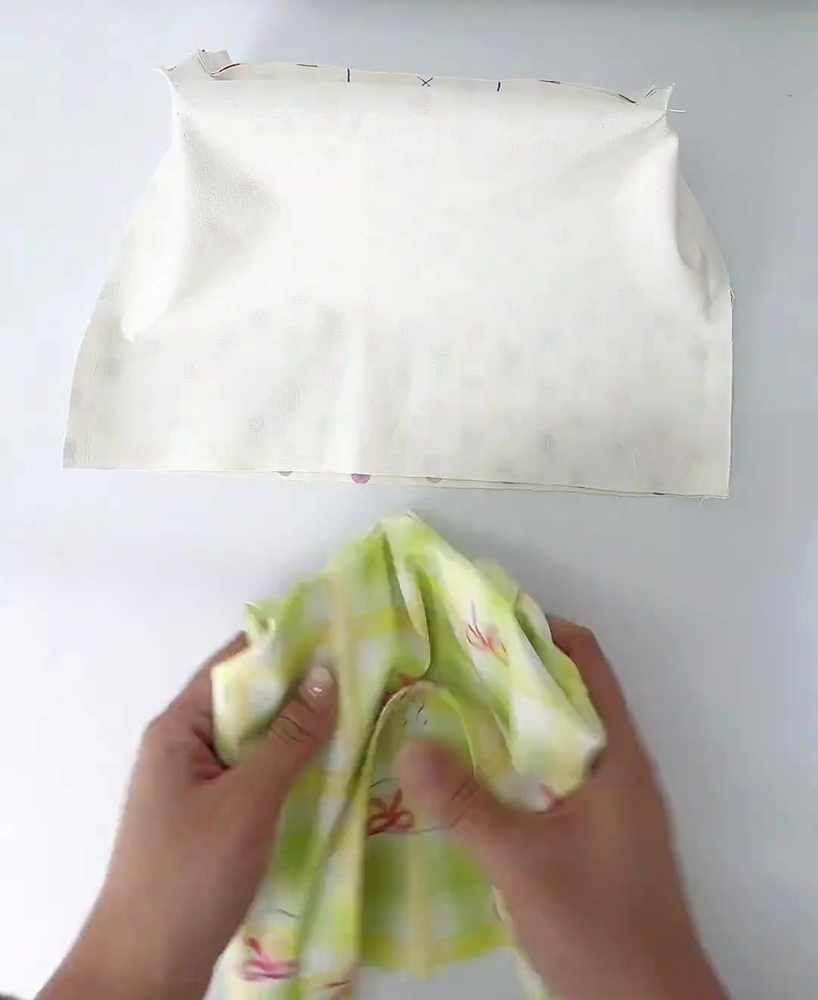
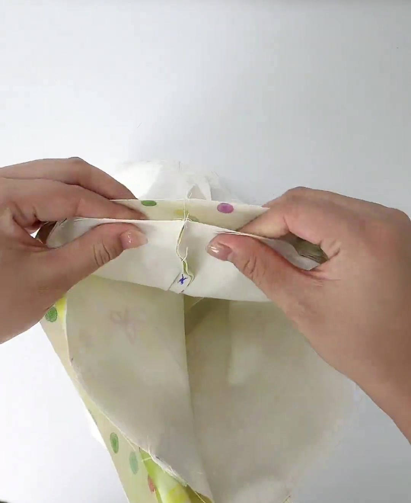
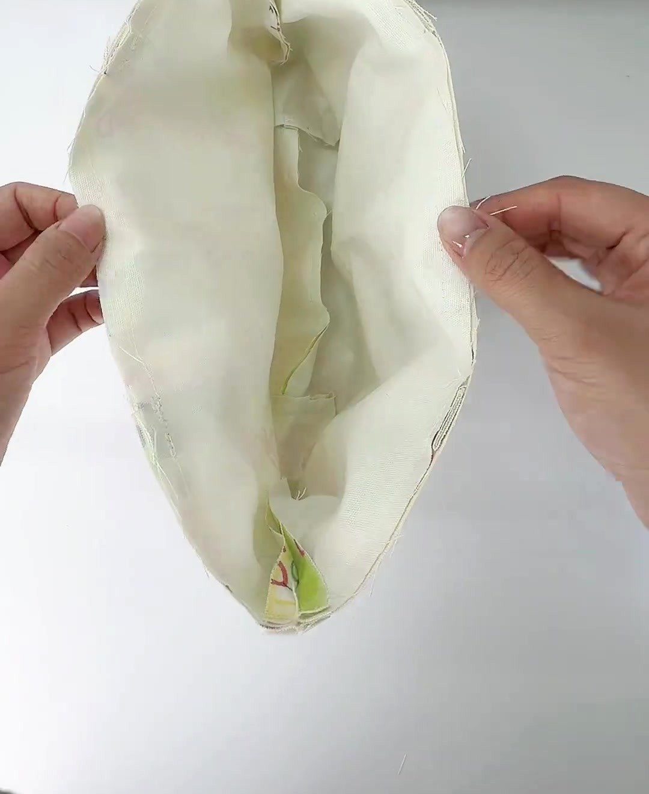
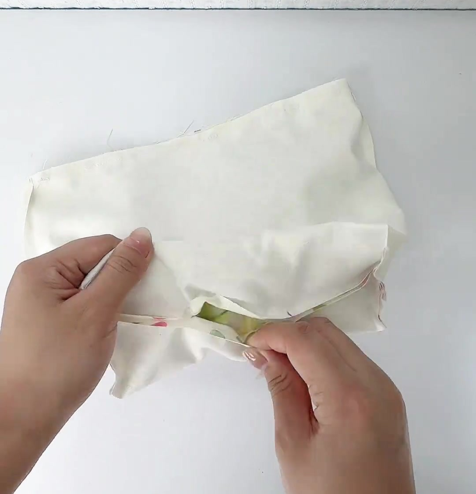
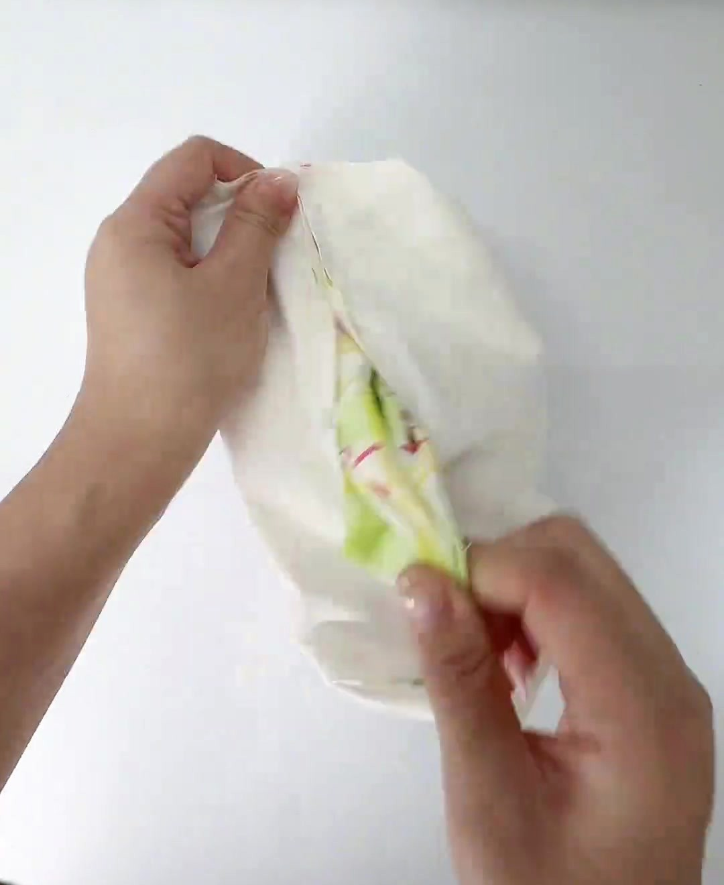
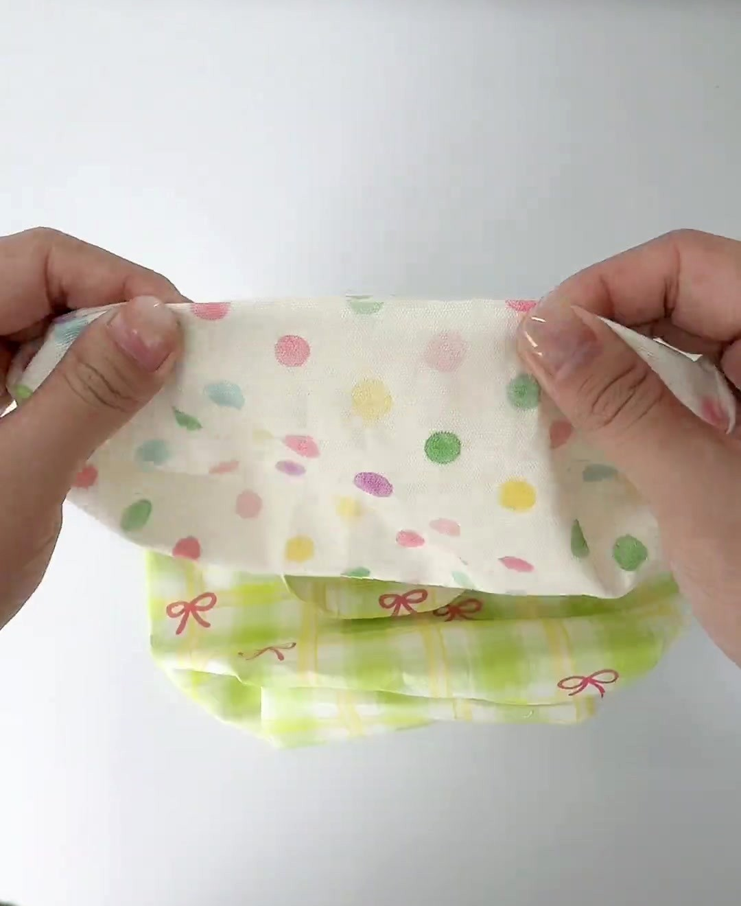

Một vòng may nối túi ngoài, túi lót và 2 quai; mép thô giấu hết vào trong — không cần vắt sổ.
Lồng túi: nhét túi ① vào trong túi ②, đáy chạm đáy, miệng ngang miệng → 2 mặt phải úp vào nhau, quai nằm kẹp giữa 2 lớp.
Mặt cắt tại chân quai (vải vẽ dày hơn thật). Đường lược 0,5 cm nằm sát mép hơn đường 1 cm → bị giấu.Thứ tự kẹp: ①② hai sườn → ③④ hai điểm giữa → kẹp chặt 4 chân quai (kẹp nhạt), rồi kẹp thêm chỗ trống.

Video 0:32Nhét túi ngoài (caro) vào túi lót đang lộn trái.

Video 0:35Canh trùng đường sườn ngoài với sườn lót.
Nhét túi ngoài vào trong túi lót (ngoài: mặt phải ra, quai úp xuống; lót: mặt trái ra). Vì sao: lộn ra thì mép thô tự giấu vào trong.
Kẹp 4 điểm trước: 2 sườn (sườn ngoài trùng sườn lót), điểm giữa mặt trước và mặt sau; rồi kẹp thêm. Miệng 2 túi bằng nhau.
May 1 vòng cách mép 1 cm, mũi 2,5 mm, qua chân quai chạy chậm; hết vòng may chồng 1–2 cm, lại mũi.
Kiểm tra: 4 chân quai dính vào đường may; khe dây ở sườn không bị may dính.
Trong video
0:32–0:35: “Lồng vải ngoài vào trong vải lót, canh trùng đường may, may 1 vòng miệng.”
Mẹo
Tháo bàn may rời (khay bọc quanh tay máy, nếu có), lồng miệng túi vào tay máy, mặt lót quay lên. Qua chân quai (6 lớp): chạy chậm hoặc quay tay vô lăng, kim 90/14. Không tỉa mép.
Lỗi hay gặp
Nhìn ngoài thấy caro = nhét ngược. Quai xoắn hoặc thụt khỏi mép. May sát mép (dưới 0,5 cm) → lộ đường lược, dễ bung.
Túi dây rút có quai · Hướng dẫn dễ hiểu
Bước 7 May · Lộn túi & đóng khe lộn
Lộn túi qua khe lộn, rồi may kín
Khe lộn 8–10 cm ở đáy lót là “cửa” để kéo cả túi ra mặt phải; sau cùng khe nằm trong lòng túi.
Lộn túi: kéo đáy túi ngoài ra trước, rồi thân, cuối cùng là 2 quai. Đẩy 4 góc trước khi may kín khe.Đóng khe lộn: cách 1 để lại 1 đường chỉ nhỏ ở đáy lót, trong lòng túi (dùng chỉ kem trùng lót); cách 2 kín hoàn toàn.

Video 0:37May xong vòng miệng, túi vẫn lộn trái.

Video 0:38Mở khe lộn: thấy caro bên trong.

Video 0:40Kéo túi ngoài ra qua khe lộn.

Video 0:40Lộn xong: lót ở trên, túi caro ở dưới.
Kiểm tra trước khi sang bước 8
Đáy lót kín; đường may mí chồng qua 2 đầu khe.
4 góc đáy nhọn, vuông; đáy phẳng 18 × 10 cm.
2 quai không xoắn; 4 chân quai dính chắc.
Miệng không lộ mép thô, không hở chỗ nối.
Khe dây ở 2 sườn vẫn mở (lọt đầu ngón út).
Cẩn thận
Không dùng kéo nhọn đẩy góc — dễ thủng vải. Khe nhỏ thì kéo từ từ, giật mạnh dễ rách 2 đầu khe.
Trong video
0:37–0:40: “Lộn ra mặt phải qua khe lộn, may kín khe lộn.” Không có cận cảnh lúc may khe.